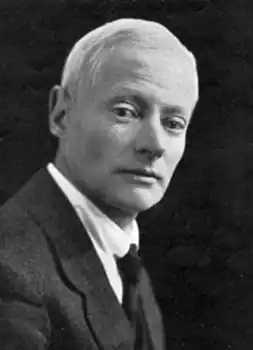

Вільям Ваймарк Джейкобс народився 8 вересня 1863 року в сім'ї керуючого девонської верфі; його дитячі роки були тісно пов'язані з портовим життям. Він навчався — спочатку в приватній школі, потім у коледжі Біркбек (який є частиною Лондонського університету, а тоді називався Birkbeck Literary and Scientific Institution).
1879 року Джейкобс вступив на роботу клерком в банк, а в 1885 році опублікував своє перше оповідання. Улюбленою темою Джейкобса була морська: саме їй присвячені збірки оповідань "Many Cargoes" (1896) та "The Sea Urchins" (1898), майже всі оповідання якого були надруковані в журналі "Idler", яким керував Джером Клапка Джером), а також роман "Skipper's Wooing" (1897). Типовий герой Джейкобса — доглядач маяка, який розповідає про неймовірні пригоди своїх знайомих матросів.
Джейкобс майстерно і зі смаком відтворював у своїх творах діалекти Іст-енду, чим заслужив на повагу, зокрема, Пелема Вудгауза (який написав про його вплив у автобіографічній книзі "Bring on the Girls" 1954 року). Починаючи з 1898 року, майже всі оповідання Джекобса друкувалися в "Стренді". Одружившись у 1900 році, Джейкобс переїхав до Ессексу, де вже через кілька років мав два будинки, "Аутлук" (Outlook, у Парк-Хіллі) і Фелтем-хаус (Feltham House, в Голдінгс-Гіллі). Меморіальна табличка відзначає також лондонську резиденцію Джейкобса, 15 Gloucester Gate, Ріджентс-парк (де пізніше розташувався Інститут архітектури принца Уельського). Загалом у Джейкобів було двоє синів і три дочки. До початку Першої світової війни Джейкобс майже перестав писати оповідання: до кінця свого життя він переважно займався адаптаціями своїх творів для театральної сцени. У 1928 році брав участь у створенні фільмів за своїми творами. Перший знятий фільм мав назву "Браво". Було прослухано п'ятдесят актрис, і Джекоба, як кажуть, вразила Педді Нейсміт, яку вибрали на головну роль. Джейкобс помер 1 вересня 1943 року на Горнсі Лейн, Іслінгтон, Лондон, у віці 79 років.